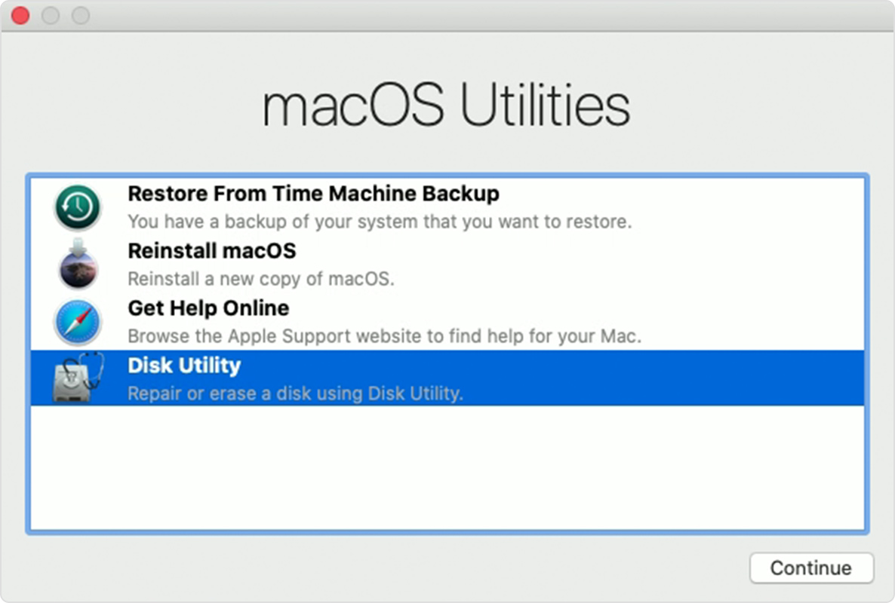
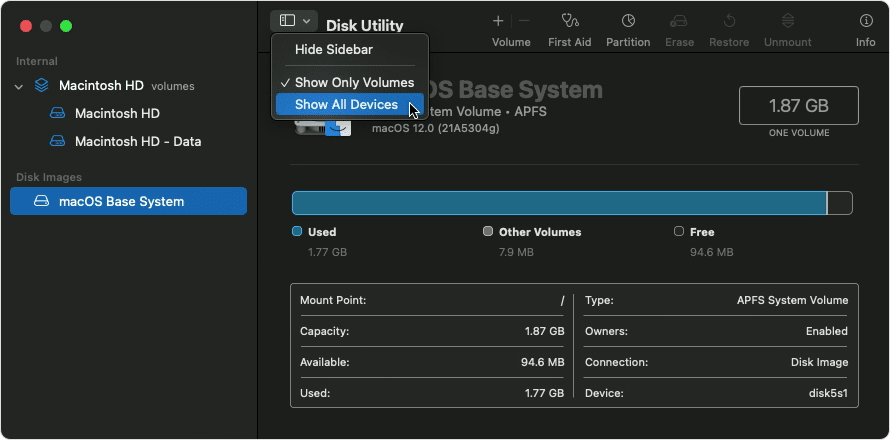
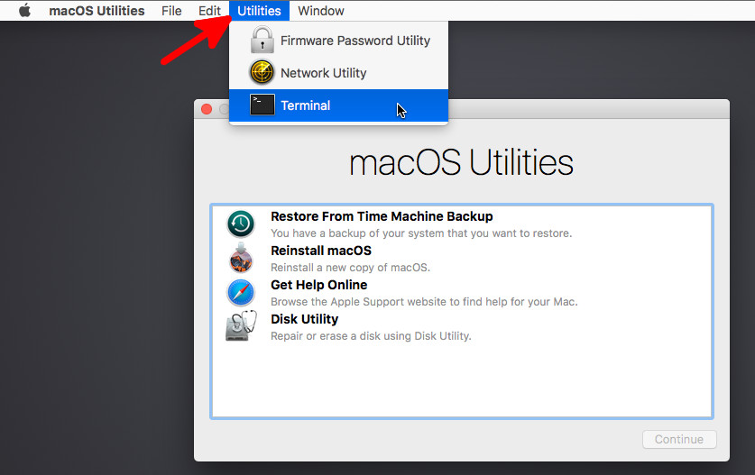
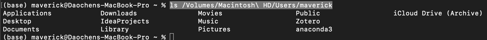

本文使用的格式是Mac OS Extended (Case-sensitive, Journaled)
Command + R，进入macOS
Utilities
若进入Internet Recovery，本地Recovery Partition可能已经损坏，尝试走完Internet Recovery流程

如果格式不支持，需要格式化erase

查看所有磁盘，确保U盘/移动硬盘Mount成功
ls /Volumes查看用户maverick目录下文件
ls /Volumes/Macintosh\ HD/Users/maverick
拷贝数据
cp -rf /Volumes/Macintosh\ HD/Users/maverick/Documents /Volumes/TOSHIBA\ EXT/backup用其他Mac打开U盘/移动硬盘，确保数据传输成功